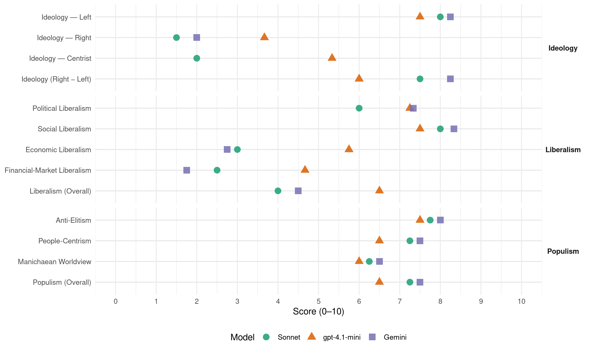

SF (Ireland, 2020)
manifesto_id 53951_202002
Get full text: This site shows derived annotations and short verbatim quotes only. The full manifesto text is © Manifesto Project / WZB — obtain it via manifesto-project.wzb.eu using the manifesto_id above.
Headline scores
| Dimension | Sonnet | gpt-4.1-mini | Gemini |
|---|---|---|---|
| Populism (Overall) | 7.2 | 6.5 | 7.5 |
| Anti-Elitism | 7.8 | 7.5 | 8.0 |
| People-Centrism | 7.2 | 6.5 | 7.5 |
| Manichaean Worldview | 6.2 | 6.0 | 6.5 |
| Ideology (Right − Left) | 7.5 | 6.0 | 8.2 |
| Liberalism (Overall) | 4.0 | 6.5 | 4.5 |
| Political Liberalism | 6.0 | 7.2 | 7.3 |
| Social Liberalism | 8.0 | 7.5 | 8.3 |
| Economic Liberalism | 3.0 | 5.8 | 2.8 |
| Financial-Market Liberalism | 2.5 | 4.7 | 1.8 |
Evidence per dimension
Economic Liberalism
Gemini · score 3.0 · verified · chunk 1
“Banning below-cost selling of fresh food products”
four-movement or 30- day rules, imposed on farmers by processors and supermarkets Banning below-cost selling of fresh food products by retailers Providing additional funding to the Irish Competition
Gemini · score 2.0 · verified · chunk 2
“We will also oppose trade agreements, like CETA and Mercosur”
We will also oppose trade agreements, like CETA and Mercosur, which will undermine democracy, our legal system, undermine environmental regulations
Gemini · score 3.0 · verified · chunk 3
“Ending the privatisation of our public services”
and increasing accountability Ending the privatisation of our public services and infrastructure. Instead we
Gemini · score 3.0 · verified · chunk 4
“Maintaining a corporation tax rate of 12.5%”
Sinn Féin priorities: Maintaining a corporation tax rate of 12.5% Cooperating with the OECD’s
gpt-4.1-mini · score 6.0 · verified · chunk 1
“We will deliver homes - introducing the largest public housing programme”
In Government, Sinn Féin will deliver homes - introducing the largest public housing programme in the history of the State. We will cut and freeze rents, ensure the availability of affordable housing.
gpt-4.1-mini · score 6.0 · verified · chunk 2
“We will increase the student maintenance grant by 10%”
Abolishing third level student fees at a cost of €243 million Increasing the student maintenance grant by 10%. Ensuring adequate funding is provided to higher education institutions to the benefit of students, staff and the wider economy alike.
gpt-4.1-mini · score 7.0 · verified · chunk 3
“free markets, competition, free enterprise, deregulation”
Sinn Féin priorities: Encouraging our SMEs and indigenous businesses to apply and win public contracts through advice and training; making sure procurement is not just about buying at the cheapest price but offering opportunities to our SMEs and indigenous businesses
gpt-4.1-mini · score 4.0 · verified · chunk 4
“increase the banking levy”
We will end this tax break for the bailed-out banks and increase the banking levy Widening the remit of the Central Bank to enforce better standards and fair pricing by banks, financial institutions and insurance companies.
Sonnet · score 3.0 · verified · chunk 1
“retaining the 12.5% corporation tax rate”
Sinn Féin values foreign direct investment and is committed to retaining the 12.5% corporation tax rate that has been key in attracting many multinational corporations to locate in Ireland.
Sonnet · score 3.0 · verified · chunk 2
“race to the bottom in workers’ rights”
They will lead to a race to the bottom in workers’ rights, environmental regulations, consumer rights, and it will harm Small and Medium Enterprises.
Sonnet · score 3.0 · verified · chunk 3
“Ending the privatisation of our public services”
Ending the privatisation of our public services and infrastructure. Instead we will promote public ownership of vital infrastructure and public service
Sonnet · score 3.0 · verified · chunk 4
“Keeping the salary cap and ban on bankers’ bonuses”
Keeping the salary cap and ban on bankers’ bonuses in place, ensuring that those banks bailed out by the taxpayer do not return to the excessive pay and reckless culture of the past
Financial-Market Liberalism
Gemini · score 2.0 · verified · chunk 1
“Give the Central Bank powers to cap mortgage interest rates”
council housing and affordable homes for renters and first time buyers. Give the Central Bank powers to cap mortgage interest rates so customers are not ripped off Money in Your Pocket
Gemini · score 1.0 · verified · chunk 2
“cause the Central Bank to instruct the banks to lower the rates”
In Government, Sinn Féin would reduce mortgage interest rates by introducing our Bill which would cause the Central Bank to instruct the banks to lower the rates.
Gemini · score 2.0 · verified · chunk 3
“Giving the Central Bank power to cap mortgage interest rates”
Sinn Féin priorities: Giving the Central Bank power to cap mortgage interest rates. In 2015, Sinn
Gemini · score 2.0 · verified · chunk 4
“Giving the Central Bank power to cap mortgage interest rates”
Sinn Féin priorities: Giving the Central Bank power to cap mortgage interest rates.
gpt-4.1-mini · score 5.0 · verified · chunk 1
“Give the Central Bank powers to cap mortgage interest rates”
Give the Central Bank powers to cap mortgage interest rates so customers are not ripped off.
gpt-4.1-mini · score 6.0 · verified · chunk 3
“Giving the Central Bank power to cap mortgage interest rates”
Sinn Féin priorities: Giving the Central Bank power to cap mortgage interest rates. In 2015, Sinn Féin brought forward legislation that would allow the Central Bank to cap mortgage interest rates charged by Irish banks.
gpt-4.1-mini · score 3.0 · verified · chunk 4
“Central Bank and Financial Services Authority Bill”
In 2017, Sinn Féin’s Central Bank and Financial Services Authority Bill became law. This legislation removed a rule that prevented the Financial Services Ombudsman from hearing complaints about financial products that had been sold six years before the time of complaint.
Sonnet · score 2.0 · verified · chunk 1
“Central Bank powers to cap mortgage interest rates”
Give the Central Bank powers to cap mortgage interest rates so customers are not ripped off
Sonnet · score 3.0 · verified · chunk 2
“reckless management, including lending, a crime”
making reckless management, including lending, a crime like it is in Britain
Sonnet · score 3.0 · verified · chunk 3
“power to cap mortgage interest rates”
Giving the Central Bank power to cap mortgage interest rates. In 2015, Sinn Féin brought forward legislation that would allow the Central Bank to cap mortgage interest rates charged by Irish banks.
Sonnet · score 2.0 · verified · chunk 4
“Central Bank power to cap mortgage interest rates”
Giving the Central Bank power to cap mortgage interest rates. In 2015, Sinn Féin brought forward legislation that would allow the Central Bank to cap mortgage interest rates charged by Irish banks.
Political Liberalism
Gemini · score 7.0 · verified · chunk 1
“democratic and peaceful mechanism to achieve Irish Unity”
obligation on both Governments to introduce and support in their respective parliaments legislation to give effect to that wish.” This democratic and peaceful mechanism to achieve Irish Unity is a game-changer.
Gemini · score 8.0 · verified · chunk 2
“reforms of the EU which are aimed at reducing the power of the European Commission, making it more transparent and accountable”
We support reforms of the EU which are aimed at reducing the power of the European Commission, making it more transparent and accountable to the European and member state parliaments
Gemini · score 7.0 · verified · chunk 3
“Establishing an independent Electoral Commission”
Presidential elections to people living in the North and to the Irish diaspora Establishing an independent Electoral Commission that registers all
gpt-4.1-mini · score 7.0 · verified · chunk 1
“Sinn Féin will seek the full implementation of the Good Friday Agreement”
In Government, Sinn Féin will: Seek the full implementation of the Good Friday Agreement, including the all-island institutions.
gpt-4.1-mini · score 7.0 · verified · chunk 2
“We want a legal foundation for the health service with rights and entitlements”
Sinn Féin has a vision and a commitment that healthcare should be free at the point of use and available to everyone when they need it based on need, not ability to pay. We want a legal foundation for the health service with rights and entitlements to health care for citizens.
gpt-4.1-mini · score 8.0 · verified · chunk 3
“Establishing an independent Electoral Commission”
Sinn Féin priorities: Establishing an independent Electoral Commission that registers all political parties, regulates electoral standards including around financial donations and interests, runs elections and referenda, is in charge of the Electoral Register and voter registration and takes proactive measures to increase voter participation
gpt-4.1-mini · score 7.0 · verified · chunk 4
“defend the sovereignty of the Irish tax system”
Sinn Féin will defend the sovereignty of the Irish tax system. This includes our corporation tax rate. In recent years, our corporation tax rate and how it is applied has come under close scrutiny.
Sonnet · score 6.0 · verified · chunk 1
“full implementation of the Good Friday Agreement”
In Government, Sinn Féin will: Seek the full implementation of the Good Friday Agreement, including the all-island institutions
Sonnet · score 5.0 · mixed · chunk 2
“lead efforts to reform and democratise the EU”
We will lead efforts to reform and democratise the EU, we will oppose any efforts to further federalise and militarise the EU.
Sonnet · score 7.0 · verified · chunk 3
“independent Electoral Commission that registers all political parties”
Establishing an independent Electoral Commission that registers all political parties, regulates electoral standards including around financial donations and interests, runs elections and referenda
Sonnet · score 5.0 · verified · chunk 4
“Government must be vigilant and hold the banks to account”
It is time the banks gave something back to the Irish people. Government must be vigilant and hold the banks to account.
Liberalism (Overall)
Gemini · score 5.0 · verified · chunk 1
“democratic and peaceful mechanism to achieve Irish Unity”
obligation on both Governments to introduce and support in their respective parliaments legislation to give effect to that wish.” This democratic and peaceful mechanism to achieve Irish Unity is a game-changer.
Gemini · score 5.0 · verified · chunk 2
“Promoting equality and human rights is at the very core of republicanism”
Promoting equality and human rights is at the very core of republicanism and of Sinn Féin’s agenda for change.
Gemini · score 5.0 · verified · chunk 3
“Promoting equality and human rights”
LGBTQI Rights and Equality Promoting equality and human rights is at the very core
Gemini · score 3.0 · verified · chunk 4
“Giving the Central Bank power to cap mortgage interest rates”
Sinn Féin priorities: Giving the Central Bank power to cap mortgage interest rates.
gpt-4.1-mini · score 6.0 · verified · chunk 1
“Sinn Féin will deliver homes - introducing the largest public housing programme”
In Government, Sinn Féin will deliver homes - introducing the largest public housing programme in the history of the State. We will cut and freeze rents, ensure the availability of affordable housing.
gpt-4.1-mini · score 7.0 · verified · chunk 2
“We want a legal foundation for the health service with rights and entitlements”
Sinn Féin has a vision and a commitment that healthcare should be free at the point of use and available to everyone when they need it based on need, not ability to pay. We want a legal foundation for the health service with rights and entitlements to health care for citizens.
gpt-4.1-mini · score 8.0 · verified · chunk 3
“Establishing an independent Electoral Commission”
Sinn Féin priorities: Establishing an independent Electoral Commission that registers all political parties, regulates electoral standards including around financial donations and interests, runs elections and referenda, is in charge of the Electoral Register and voter registration and takes proactive measures to increase voter participation
gpt-4.1-mini · score 5.0 · verified · chunk 4
“defend the sovereignty of the Irish tax system”
Sinn Féin will defend the sovereignty of the Irish tax system. This includes our corporation tax rate. In recent years, our corporation tax rate and how it is applied has come under close scrutiny.
Sonnet · score 5.0 · mixed · chunk 1
“committed to retaining the 12.5% corporation tax”
Sinn Féin values foreign direct investment and is committed to retaining the 12.5% corporation tax rate that has been key in attracting many multinational corporations to locate in Ireland.
Sonnet · score 5.0 · mixed · chunk 2
“rights of people and the environment”
We would always prioritise the rights of people and the environment over the demands of multinational capital
Sonnet · score 5.0 · verified · chunk 3
“Promoting equality and human rights”
Promoting equality and human rights is at the very core of republicanism and of Sinn Féin’s agenda for change.
Sonnet · score 3.0 · verified · chunk 4
“regulate moneylenders and loan sharks to protect”
We will regulate moneylenders and loan sharks to protect those who have no choice but to borrow to make ends meet
Anti-Elitism
Gemini · score 8.0 · verified · chunk 1
“Governments for the wealthy, Governments for the privileged”
nearly 100 years. In that time we have had Governments for the wealthy, Governments for the privileged, Governments for the property developers, Governments for the banks.
Gemini · score 8.0 · verified · chunk 2
“Fianna Fáil, Fine Gael, and Labour are the yes men of Europe.”
Fianna Fáil, Fine Gael, and Labour are the yes men of Europe. Whatever Brussels and Frankfurt propose, they support.
Gemini · score 8.0 · verified · chunk 3
“vested interests of the golden circle establishment”
working for the people and not for money or the vested interests of the golden circle establishment
Gemini · score 8.0 · verified · chunk 4
“challenge the arrogance and contempt for customers”
Sinn Féin will challenge the arrogance and contempt for customers that persists at the core of our banking system.
gpt-4.1-mini · score 9.0 · verified · chunk 1
“Governments for the wealthy, Governments for the privileged”
In that time we have had Governments for the wealthy, Governments for the privileged, Governments for the property developers, Governments for the banks. Sinn Féin believes that it’s time that we had a government for the people.
gpt-4.1-mini · score 6.0 · verified · chunk 2
“Fianna Fáil, Fine Gael, and Labour are the yes men of Europe”
Fianna Fáil, Fine Gael, and Labour are the yes men of Europe. Whatever Brussels and Frankfurt propose, they support. Their MEPs are the EU’s representatives in Ireland, promoting the agenda of the EU institutions rather than the interests of people in Ireland in the EU.
gpt-4.1-mini · score 7.0 · verified · chunk 3
“challenging vested interests”
Sinn Féin priorities: Ensuring an efficient, fair and transparent immigration system is in place Tackling white collar crime, challenging vested interests The financial crisis and Mahon Tribunal report exposed the thin line separating vested interests and white-collar crime.
gpt-4.1-mini · score 8.0 · verified · chunk 4
“the Irish public bailed out the banks at a cost”
due to the efforts of the Irish people, it was done at great social cost to citizens and huge financial cost to taxpayers. The Irish public bailed out the banks at a cost of €42 billion. It will cost the taxpayer over €1 billion a year to service this debt in the decades ahead.
Sonnet · score 9.0 · verified · chunk 1
“Governments for the wealthy, Governments for the privileged”
In that time we have had Governments for the wealthy, Governments for the privileged, Governments for the property developers, Governments for the banks.
Sonnet · score 7.0 · verified · chunk 2
“looks after the few, to the detriment of the many”
It is a consensus that looks after the few, to the detriment of the many. Fianna Fáil, Fine Gael, and Labour are the yes men of Europe.
Sonnet · score 7.0 · verified · chunk 3
“vested interests and white-collar crime”
The financial crisis and Mahon Tribunal report exposed the thin line separating vested interests and white-collar crime. Yet we’ve seen it all before.
Sonnet · score 8.0 · verified · chunk 4
“challenge the arrogance and contempt for customers”
Sinn Féin will challenge the arrogance and contempt for customers that persists at the core of our banking system.
Ideology — Centrist
gpt-4.1-mini · score 6.0 · verified · chunk 1
“a government for the people”
Sinn Féin believes that it’s time that we had a government for the people. A government that puts the welfare of its citizens above vested interests.
gpt-4.1-mini · score 4.0 · verified · chunk 2
“Our policy towards the European Union remains one of critical engagement”
Our policy towards the European Union remains one of critical engagement. Many aspects of our society, from community groups to business and education to agriculture, have been able to grow and expand as a result of the support they have received from the European Union.
gpt-4.1-mini · score 6.0 · verified · chunk 3
“everyone understands and that serves the interest of the people”
Every state has to have an immigration system with well-functioning rules and regulation that everyone understands and that serves the interest of the people of the country.
Sonnet · score 2.0 · mixed · chunk 1
“don’t want to be part of the system”
Sinn Féin wants to be in Government to deliver for ordinary, working people. But we don’t want to be part of the system. We want to change the system.
Sonnet · score 2.0 · verified · chunk 2
“independent and progressive Irish international relations”
Sinn Féin is committed to an independent and progressive Irish international relations policy
Sonnet · score 2.0 · verified · chunk 3
“golden circle establishment”
those in power are working for the people and not for money or the vested interests of the golden circle establishment
Sonnet · score 2.0 · verified · chunk 4
“deliver for workers and families”
Our tax and spending plans will deliver on the priorities of workers and families.
Ideology — Left
Gemini · score 8.0 · verified · chunk 1
“deliver for ordinary, working people”
We will cut the exorbitant cost of childcare. We will end the insurance rip off. Sinn Féin wants to be in Government to deliver for ordinary, working people. But we don’t want to be part of
Gemini · score 8.0 · verified · chunk 2
“not for the EU insiders, middle-men and corporate interests”
works for the people of Europe, not for the EU insiders, middle-men and corporate interests.
Gemini · score 8.0 · verified · chunk 3
“shrink the gap between the rich and those with less”
potential to transform Ireland, to shrink the gap between the rich and those with less, to ensure workers secure
Gemini · score 9.0 · verified · chunk 4
“wealth tax for the wealthiest 1%”
Introduce a wealth tax for the wealthiest 1% in the State at a rate of 1%
gpt-4.1-mini · score 8.0 · verified · chunk 1
“We will deliver for workers and hard pressed families”
In Government, Sinn Féin will deliver for the people. We will deliver homes… We will deliver for workers and hard pressed families – by abolishing the USC on the first €30,000 earned.
gpt-4.1-mini · score 7.0 · verified · chunk 2
“We are committed to equal access and opportunity for all students”
As a party, we are committed to equal access and opportunity for all students to study whatever course they believe suits them, without financial barriers. This would mean abolishing all third-level fees across all courses and public institutions in order to give everyone the chance to further their education if they so wish.
gpt-4.1-mini · score 7.0 · verified · chunk 3
“Tackling white collar crime”
Sinn Féin priorities: Ensuring an efficient, fair and transparent immigration system is in place Tackling white collar crime, challenging vested interests The financial crisis and Mahon Tribunal report exposed the thin line separating vested interests and white-collar crime.
gpt-4.1-mini · score 8.0 · verified · chunk 4
“end this tax break for the bailed-out banks”
Ending the corporation tax break for the bailed-bailed out banks. In 2014, Fine Gael and Labour allowed these banks to write off their past losses against future profits to reduce their corporation tax bill to zero. We will end this tax break for the bailed-out banks and increase the banking levy
Sonnet · score 9.0 · verified · chunk 1
“largest public housing programme in the history”
We will deliver homes - introducing the largest public housing programme in the history of the State.
Sonnet · score 7.0 · verified · chunk 2
“biggest Council-led house building programme”
Sinn Féin plans to deliver the biggest Council-led house building programme this state has ever seen.
Sonnet · score 8.0 · verified · chunk 3
“redistribution, social equality”
We will ensure that all workers will receive a tax cut while only the top 3% of individual earners will see any increase in their net income tax
Sonnet · score 8.0 · verified · chunk 4
“Introduce a wealth tax for the wealthiest 1%”
Introduce a wealth tax for the wealthiest 1% in the State at a rate of 1% on the portion of net wealth held over €1 million
Ideology (Right − Left)
Gemini · score 8.0 · verified · chunk 1
“deliver for ordinary, working people”
We will cut the exorbitant cost of childcare. We will end the insurance rip off. Sinn Féin wants to be in Government to deliver for ordinary, working people. But we don’t want to be part of
Gemini · score 8.0 · verified · chunk 2
“not for the EU insiders, middle-men and corporate interests”
works for the people of Europe, not for the EU insiders, middle-men and corporate interests.
Gemini · score 8.0 · verified · chunk 3
“shrink the gap between the rich and those with less”
potential to transform Ireland, to shrink the gap between the rich and those with less, to ensure workers secure
Gemini · score 9.0 · verified · chunk 4
“wealth tax for the wealthiest 1%”
Introduce a wealth tax for the wealthiest 1% in the State at a rate of 1%
gpt-4.1-mini · score 7.0 · verified · chunk 1
“Governments for the wealthy, Governments for the privileged”
In that time we have had Governments for the wealthy, Governments for the privileged, Governments for the property developers, Governments for the banks. Sinn Féin believes that it’s time that we had a government for the people.
gpt-4.1-mini · score 5.0 · verified · chunk 2
“Fianna Fáil, Fine Gael, and Labour are the yes men of Europe”
Fianna Fáil, Fine Gael, and Labour are the yes men of Europe. Whatever Brussels and Frankfurt propose, they support. Their MEPs are the EU’s representatives in Ireland, promoting the agenda of the EU institutions rather than the interests of people in Ireland in the EU.
gpt-4.1-mini · score 6.0 · verified · chunk 3
“challenging vested interests”
Sinn Féin priorities: Ensuring an efficient, fair and transparent immigration system is in place Tackling white collar crime, challenging vested interests The financial crisis and Mahon Tribunal report exposed the thin line separating vested interests and white-collar crime.
gpt-4.1-mini · score 6.0 · verified · chunk 4
“end this tax break for the bailed-out banks”
Ending the corporation tax break for the bailed-bailed out banks. In 2014, Fine Gael and Labour allowed these banks to write off their past losses against future profits to reduce their corporation tax bill to zero. We will end this tax break for the bailed-out banks and increase the banking levy
Sonnet · score 8.0 · verified · chunk 1
“anti-corporate elite, redistribution”
Sinn Féin will take on the cartel-like beef processing sector that is pushing family farms out of business, reform the Common Agricultural Policy (CAP) so that it supports the farmers who need it the most
Sonnet · score 7.0 · verified · chunk 2
“anti-corporate elite, redistribution, social equality”
We would always prioritise the rights of people and the environment over the demands of multinational capital that seeks to trample over hard won rights and regulations.
Sonnet · score 7.0 · verified · chunk 3
“anti-corporate elite, redistribution”
Stronger legislation including a right to collective bargaining has the potential to transform Ireland, to shrink the gap between the rich and those with less
Sonnet · score 8.0 · verified · chunk 4
“anti-avoidance measures against these property investment funds”
Sinn Féin were instrumental in introducing anti-avoidance measures against these property investment funds.
Ideology — Right
Gemini · score 2.0 · verified · chunk 3
“Sinn Féin does not want open borders”
responsible for their failures. Sinn Féin does not want open borders. We believe that all
gpt-4.1-mini · score 3.0 · verified · chunk 2
“We do not want open borders. We believe that all states must manage migration”
Sinn Féin does not want open borders. We believe that all states must manage migration. Every state has to have an immigration system with well-functioning rules and regulation that everyone understands and that serves the interest of the people of the country.
gpt-4.1-mini · score 5.0 · verified · chunk 3
“Sinn Féin does not want open borders”
Successive Governments have failed to deliver what is needed in terms of housing and health delivery. They and they alone are responsible for their failures. Sinn Féin does not want open borders. We believe that all states must manage migration.
gpt-4.1-mini · score 3.0 · verified · chunk 4
“making it illegal for banks to sell homes to vulture funds”
Sinn Féin will stand up for families by making it illegal for banks to sell these homes to vulture funds without the consent of the mortgage-holder.
Sonnet · score 2.0 · verified · chunk 1
“end to British rule secured”
Republicans believe that until national freedom is achieved and an end to British rule secured, we cannot build the Ireland envisioned in the 1916 Proclamation.
Sonnet · score 2.0 · verified · chunk 2
“Sinn Féin does not want open borders”
Sinn Féin does not want open borders. We believe that all states must manage migration.
Sonnet · score 1.0 · verified · chunk 3
“all states must manage migration”
Sinn Féin does not want open borders. We believe that all states must manage migration.
Sonnet · score 1.0 · verified · chunk 4
“defend the sovereignty of the Irish tax system”
Sinn Féin will defend the sovereignty of the Irish tax system. This includes our corporation tax rate.
Manichaean Worldview
Gemini · score 7.0 · verified · chunk 1
“sided with landlords, developers, insurance companies and vulture funds”
life for most people in Ireland in 2020. At every step over the last four years they have sided with landlords, developers, insurance companies and vulture funds. And our people have been left the poorer for it.
Gemini · score 6.0 · verified · chunk 2
“looks after the few, to the detriment of the many”
It is a consensus that looks after the few, to the detriment of the many.
Gemini · score 6.0 · verified · chunk 3
“Ethics thrown out the window and the public good kicked to the kerb”
and the FÁS expenses debacle. Ethics thrown out the window and the public good kicked to the kerb. There is no single
Gemini · score 7.0 · verified · chunk 4
“preying on distressed families and homes”
clamp down on vulture funds that are preying on distressed families and homes.
gpt-4.1-mini · score 7.0 · verified · chunk 1
“Successive governments have delivered for their friends and cronies”
Successive governments have delivered for their friends and cronies. They have delivered for big business, for vested interests and for golden circles. In Government, Sinn Féin will deliver for the people.
gpt-4.1-mini · score 5.0 · verified · chunk 2
“The greatest trick ever pulled by Fine Gael and Fianna Fáil was convincing the public”
The greatest trick ever pulled by Fine Gael and Fianna Fáil was convincing the public that our health service couldn’t be fixed. It certainly won’t be fixed by them, but it can be fixed.
gpt-4.1-mini · score 5.0 · mixed · chunk 3
“Ethics thrown out the window and the public good kicked to the kerb”
The financial crisis and Mahon Tribunal report exposed the thin line separating vested interests and white-collar crime. Yet we’ve seen it all before. We’ve had the Ansbacher and Dirt scandals, the McCracken and Moriarty Tribunals, and the FÁS expenses debacle. Ethics thrown out the window and the public good kicked to the kerb.
gpt-4.1-mini · score 6.0 · verified · chunk 4
“arrogance and contempt for customers”
The tracker mortgage scandal has shown how the culture in our banks hasn’t changed, with the Chief Executive of KBC recently describing compensation paid to those who were subject to the scandal as an administrative burden. Sinn Féin will challenge the arrogance and contempt for customers that persists at the core of our banking system.
Sonnet · score 8.0 · verified · chunk 1
“sided with landlords, developers, insurance companies”
At every step over the last four years they have sided with landlords, developers, insurance companies and vulture funds. And our people have been left the poorer for it.
Sonnet · score 5.0 · verified · chunk 2
“greatest trick ever pulled by Fine Gael”
The greatest trick ever pulled by Fine Gael and Fianna Fáil was convincing the public that our health service couldn’t be fixed.
Sonnet · score 5.0 · verified · chunk 3
“Fine Gael rolled out the red carpet to vulture funds”
Instead, Fine Gael rolled out the red carpet to vulture funds and international investors, allowing them to hoover up assets from distressed families
Sonnet · score 7.0 · verified · chunk 4
“vultures and funds to transfer wealth out of Ireland”
They have allowed these vultures and funds to transfer wealth out of Ireland to hidden international investors using low-tax arrangements.
People-Centrism
Gemini · score 8.0 · verified · chunk 1
“Sinn Féin will deliver for the people”
for vested interests and for golden circles. In Government, Sinn Féin will deliver for the people. We will deliver homes - introducing the largest public
Gemini · score 7.0 · verified · chunk 2
“works for the people of Europe, not for the EU insiders”
Sinn Féin will build a fairer and more democratic European Union that works for the people of Europe, not for the EU insiders, middle-men and corporate interests.
Gemini · score 7.0 · verified · chunk 3
“serves the interest of the people”
everyone understands and that serves the interest of the people of the country.
Gemini · score 8.0 · verified · chunk 4
“gave something back to the Irish people”
It is time the banks gave something back to the Irish people. Government must be vigilant
gpt-4.1-mini · score 8.0 · verified · chunk 1
“a government for the people”
Sinn Féin believes that it’s time that we had a government for the people. A government that puts the welfare of its citizens above vested interests.
gpt-4.1-mini · score 5.0 · verified · chunk 2
“It is time to stand up for Ireland and the interests of all of the people”
It is time for a new direction, in Ireland and in the EU institutions. It is time to stand up for Ireland and the interests of all of the people who share this island. It is time to end the Brussels power grab, to reign in the Commission, and return powers to the member states.
gpt-4.1-mini · score 6.0 · verified · chunk 3
“serves the interest of the people of the country”
Every state has to have an immigration system with well-functioning rules and regulation that everyone understands and that serves the interest of the people of the country. This system must have regard to how many people are needed to meet shortfalls in the labour market and how many people can be integrated effectively with adequate support and resourcing.
gpt-4.1-mini · score 7.0 · verified · chunk 4
“the Irish people”
due to the efforts of the Irish people, it was done at great social cost to citizens and huge financial cost to taxpayers. The Irish public bailed out the banks at a cost of €42 billion.
Sonnet · score 9.0 · verified · chunk 1
“a government for the people”
Sinn Féin believes that it’s time that we had a government for the people. A government that puts the welfare of its citizens above vested interests.
Sonnet · score 6.0 · verified · chunk 2
“stand up for Ireland and the interests of all”
It is time to stand up for Ireland and the interests of all of the people who share this island.
Sonnet · score 6.0 · verified · chunk 3
“owned by the people, connecting all of Ireland”
Clean, affordable public transport for the people, owned by the people, connecting all of Ireland
Sonnet · score 8.0 · verified · chunk 4
“It is time the banks gave something back to the Irish people”
Despite making combined profits of over €2.2 billion in 2018 alone… It is time the banks gave something back to the Irish people.
Populism (Overall)
Gemini · score 8.0 · verified · chunk 1
“Sinn Féin believes that it’s time that we had a government for the people”
for the property developers, Governments for the banks. Sinn Féin believes that it’s time that we had a government for the people. A government that puts the welfare of its citizens
Gemini · score 7.0 · verified · chunk 2
“Sinn Féin stands against this Brussels consensus”
Sinn Féin stands against this Brussels consensus; we have highlighted the negative impact of the policies of austerity
Gemini · score 7.0 · verified · chunk 3
“vested interests of the golden circle establishment”
working for the people and not for money or the vested interests of the golden circle establishment
Gemini · score 8.0 · verified · chunk 4
“challenge the arrogance and contempt for customers”
Sinn Féin will challenge the arrogance and contempt for customers that persists at the core of our banking system.
gpt-4.1-mini · score 8.0 · verified · chunk 1
“Governments for the wealthy, Governments for the privileged”
In that time we have had Governments for the wealthy, Governments for the privileged, Governments for the property developers, Governments for the banks. Sinn Féin believes that it’s time that we had a government for the people.
gpt-4.1-mini · score 5.0 · verified · chunk 2
“Fianna Fáil, Fine Gael, and Labour are the yes men of Europe”
Fianna Fáil, Fine Gael, and Labour are the yes men of Europe. Whatever Brussels and Frankfurt propose, they support. Their MEPs are the EU’s representatives in Ireland, promoting the agenda of the EU institutions rather than the interests of people in Ireland in the EU.
gpt-4.1-mini · score 6.0 · verified · chunk 3
“challenging vested interests”
Sinn Féin priorities: Ensuring an efficient, fair and transparent immigration system is in place Tackling white collar crime, challenging vested interests The financial crisis and Mahon Tribunal report exposed the thin line separating vested interests and white-collar crime.
gpt-4.1-mini · score 7.0 · verified · chunk 4
“the Irish public bailed out the banks at a cost”
due to the efforts of the Irish people, it was done at great social cost to citizens and huge financial cost to taxpayers. The Irish public bailed out the banks at a cost of €42 billion.
Sonnet · score 9.0 · verified · chunk 1
“deliver for ordinary, working people”
Sinn Féin wants to be in Government to deliver for ordinary, working people. But we don’t want to be part of the system. We want to change the system.
Sonnet · score 6.0 · verified · chunk 2
“consensus that looks after the few”
It is a consensus that looks after the few, to the detriment of the many. Fianna Fáil, Fine Gael, and Labour are the yes men of Europe.
Sonnet · score 6.0 · verified · chunk 3
“working for the people and not for money”
restore confidence in politics and ensure that those in power are working for the people and not for money or the vested interests of the golden circle establishment
Sonnet · score 8.0 · verified · chunk 4
“Fine Gael rolled out the red carpet to vulture funds”
Instead, Fine Gael rolled out the red carpet to vulture funds and international investors, allowing them to hoover up assets from distressed families.
Social Liberalism